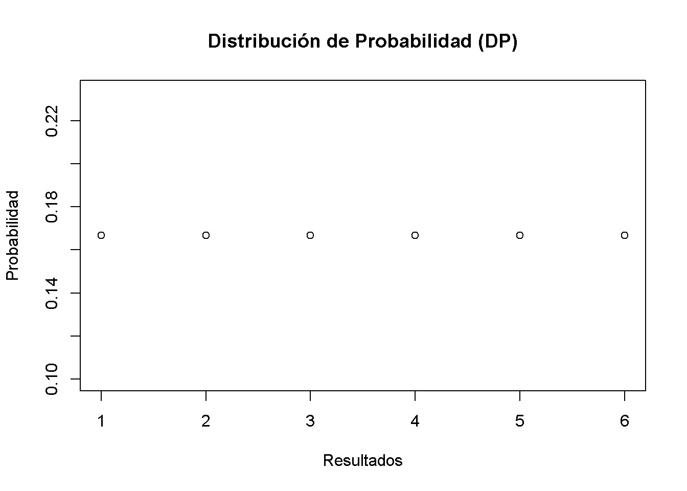
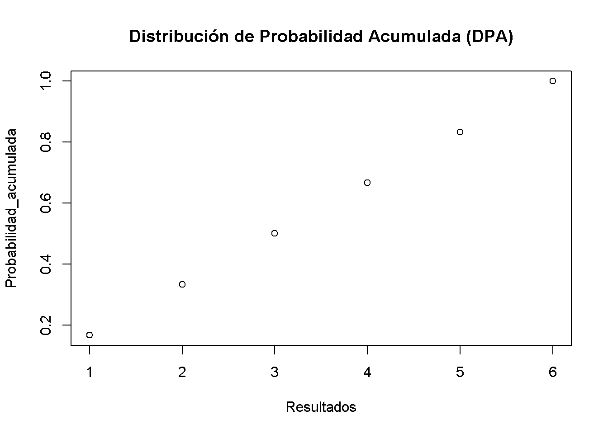
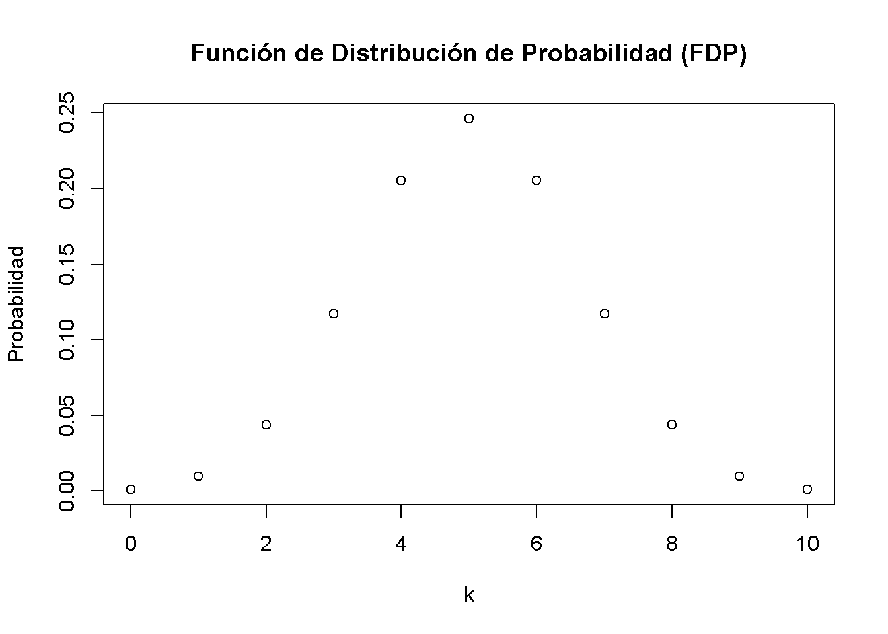
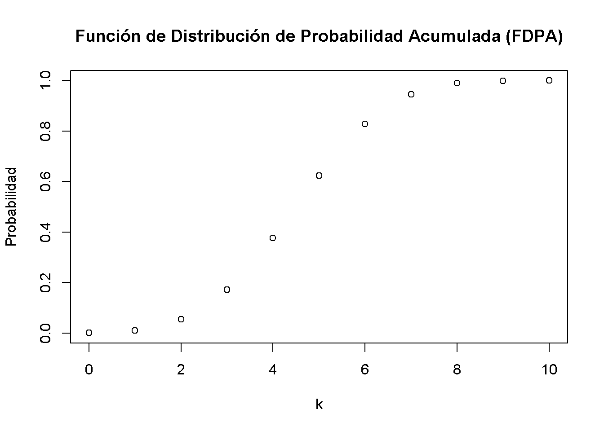
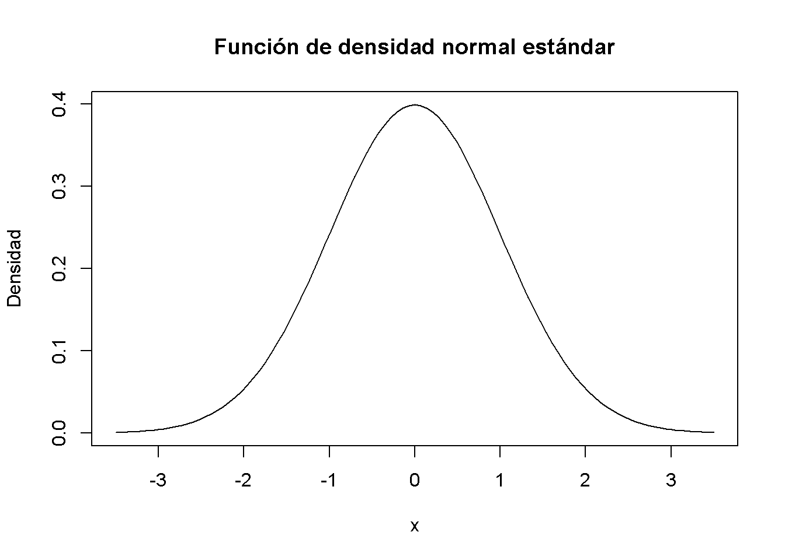
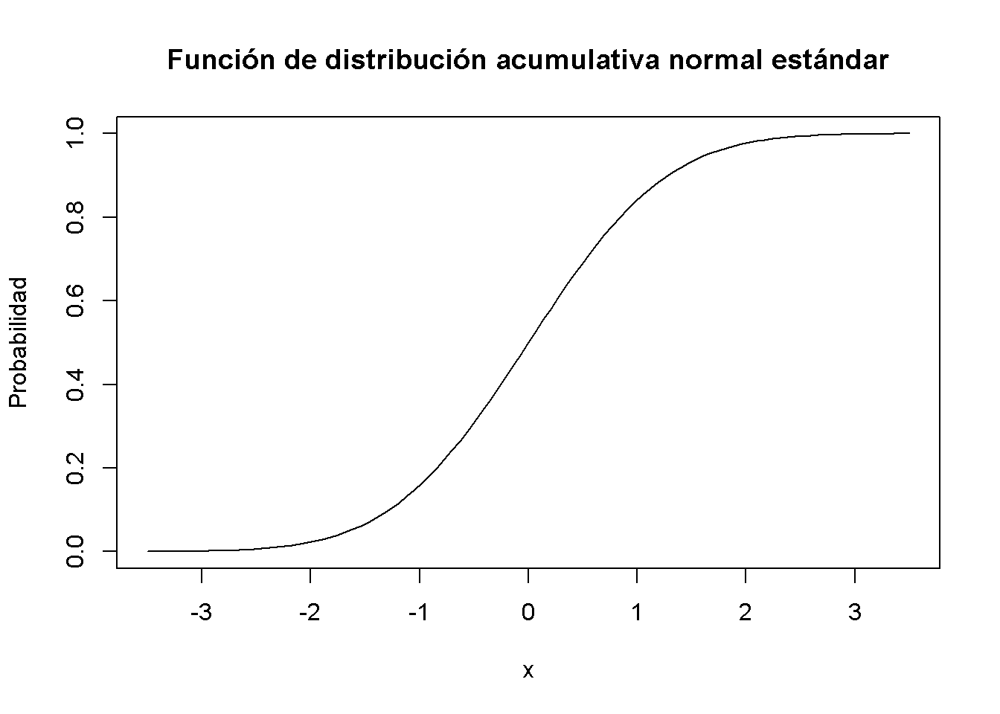
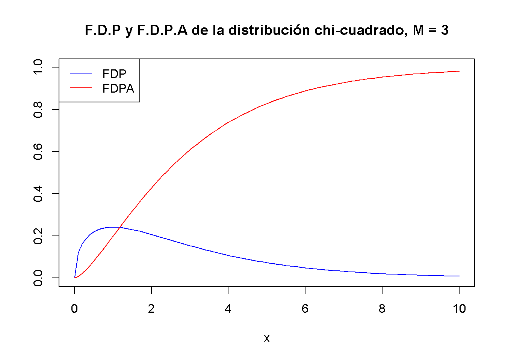
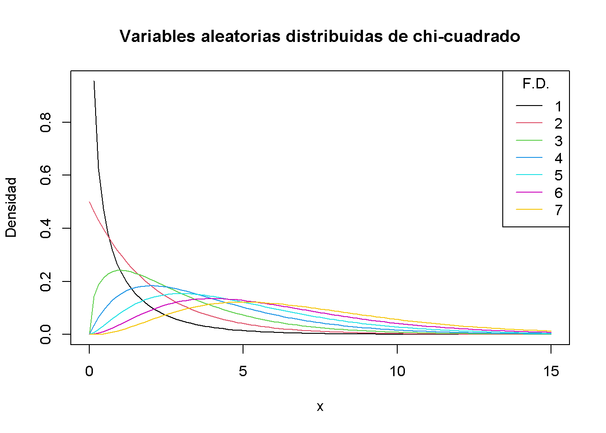
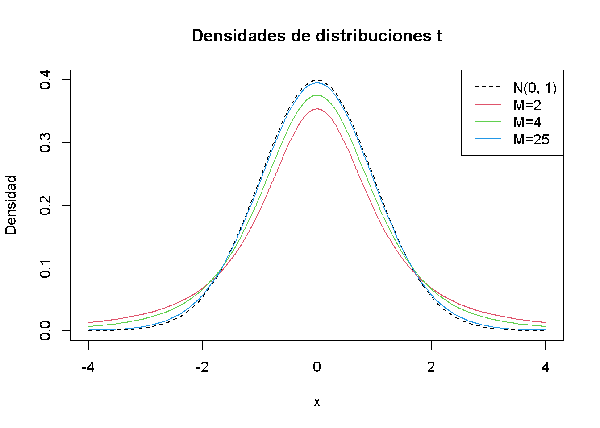
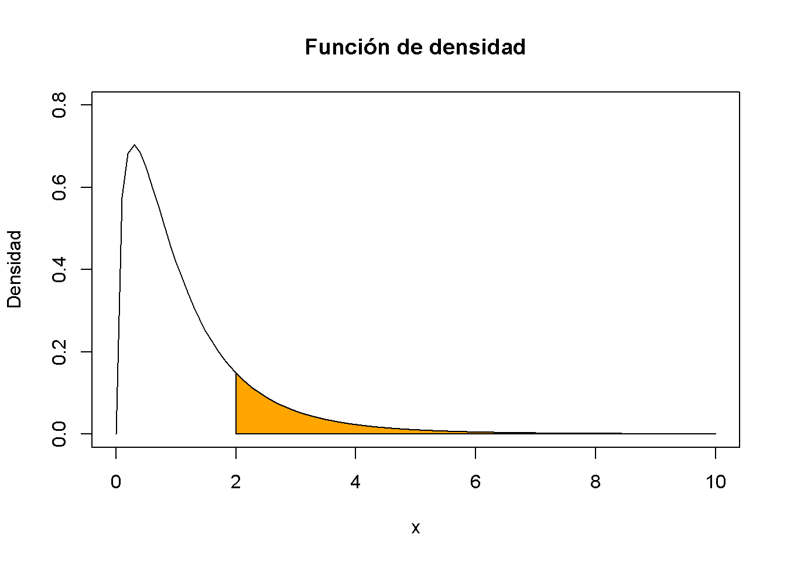

3.1 Variables aleatorias y distribuciones de probabilidad
Resulta de vital importancia repasar brevemente algunos conceptos básicos de la teoría de la probabilidad.
- Los resultados mutuamente excluyentes de un proceso aleatorio se denominan simplemente resultados. “Mutuamente excluyente” implica que sólo se puede observar uno de los posibles resultados.
- La probabilidad de un resultado como se refiere a la proporción en que el resultado ocurre a largo plazo; es decir, si el experimento se repite muchas veces.
- El conjunto de todos los resultados posibles de una variable aleatoria se denomina espacio muestral.
- Un evento es un subconjunto del espacio muestral y consta de uno o más resultados.
Estas ideas están unificadas en un concepto llamado variable aleatoria que es un resumen numérico de resultados aleatorios. Las variables aleatorias pueden ser discretas o continuas.
- Las variables aleatorias discretas tienen resultados discretos, por ejemplo, \(0\) y \(1\) (números enteros).
- Una variable aleatoria continua puede tomar un continuo de valores posibles, por ejemplo, \(0.5\) y \(1.25\) (números decimales).
Distribuciones de probabilidad de variables aleatorias discretas
Un ejemplo típico de una variable aleatoria discreta \(D\) es el resultado de lanzar un dado: en términos de un experimento aleatorio, esto no es más que seleccionar al azar una muestra de tamaño \(1\) de un conjunto de números que son resultados mutuamente excluyentes. Aquí, el espacio muestral es \(\{1,2,3,4,5,6\}\) y se puede pensar en muchos otros eventos, por ejemplo, “el resultado observado se puede encuentra entre \(2\) y \(5\).”
Una función básica para extraer muestras aleatorias de un conjunto específico de elementos es la función sample(), consulte ?Sample. Se puede usar para simular el resultado aleatorio de una tirada de dados. ¡Se tiran los dados!
sample(1:6, 1)
#> [1] 2La distribución de probabilidad (DP) de una variable aleatoria discreta es la lista de todos los valores posibles de la variable y sus probabilidades, que suman \(1\). La función de distribución de probabilidad (FDP) acumulada da la probabilidad de que la variable aleatoria sea menor o igual a un valor particular.
Para la tirada de dados, la distribución de probabilidad (DP) y la distribución de probabilidad acumulada (DPA) se resumen en la Tabla 3.1.
| Resultado | 1 | 2 | 3 | 4 | 5 | 6 |
|---|---|---|---|---|---|---|
| Probabilidad | 1/6 | 1/6 | 1/6 | 1/6 | 1/6 | 1/6 |
| Probabilidad Acumulada | 1/6 | 2/6 | 3/6 | 4/6 | 5/6 | 1 |
Se puede graficar fácilmente ambas funciones usando R. Dado que la probabilidad es igual a \(1/6\) para cada resultado, se configura el vector Probabilidad usando la función rep() que replica un valor dado un número específico de veces.
# generar el vector de probabilidades
Probabilidad <- rep(1/6, 6)
# graficar las probabilidades
plot(Probabilidad,
xlab = "Resultados",
main = "Distribución de Probabilidad (DP)") 
Para la distribución de probabilidad acumulada, se necesitan las probabilidades acumuladas; es decir, se necesitan las sumas acumuladas del vector Probabilidad. Dichas sumas se pueden calcular usando cumsum().
# generar el vector de probabilidades acumuladas
Probabilidad_acumulada <- cumsum(Probabilidad)
# graficar las probabilidades
plot(Probabilidad_acumulada,
xlab = "Resultados",
main = "Distribución de Probabilidad Acumulada (DPA)") 
Ensayos de Bernoulli
El conjunto de elementos de los que sample() extrae resultados no tiene por qué consistir solo en números. También se podría simular el lanzamiento de una moneda con los resultados \(H\) (cara) y \(T\) (cruz).
sample(c("H", "T"), 1)
#> [1] "T"El resultado de un solo lanzamiento de la moneda es una variable aleatoria con distribución de Bernoulli; es decir, una variable con dos posibles resultados distintos.
Imagine que está a punto de lanzar una moneda \(10\) veces seguidas y se pregunta qué tan probable es que termine con \(5\) caras. Este es un ejemplo típico de lo que se llama un experimento de Bernoulli, ya que consta de \(n = 10\) ensayos de Bernoulli que son independientes entre sí y se está interesado en la probabilidad de observar \(k = 5\) éxitos de \(H\) que ocurren con probabilidad \(p = 0.5\) (asumiendo que la moneda no tiene truco, una moneda justa) en cada prueba. Tenga en cuenta que aquí no importa el orden de los resultados.
Es un resultado bien conocido que el número de éxitos \(k\) en un experimento de Bernoulli sigue una distribución binomial. Se denota esto como
\[k \sim B(n,p).\]
La probabilidad de observar \(k\) éxitos en el experimento \(B(n, p)\) viene dada por
\[f(k)=P(k)=\begin{pmatrix}n\\ k \end{pmatrix} \cdot p^k \cdot (1-p)^{n-k}=\frac{n!}{k!(n-k)!} \cdot p^k \cdot (1-p)^{n-k}\]
con el coeficiente binomial \(\begin{pmatrix}n\\ k \end{pmatrix}\).
En R, se pueden resolver problemas como el anterior mediante la función dbinom() que calcula \(P(k\vert n, p)\), la probabilidad de la distribución binomial dados los parámetros x (\(k\)), tamaño (\(n\)) y prob (\(p\)), consulte ?dbinom. Se calcula \(P(k=5\vert n = 10, p = 0.5)\) (se escribe en corto como \(P(k=5)\).)
dbinom(x = 5,
size = 10,
prob = 0.5)
#> [1] 0.2460938Se concluye que \(P(k=5)\), la probabilidad de observar cara \(k = 5\) veces cuando se lanza una moneda justa \(n = 10\) veces es de aproximadamente \(24,6 \%\).
Ahora suponga que se está interesado en \(P(4 \leq k \leq 7)\); es decir, la probabilidad de observando éxitos de \(4\), \(5\), \(6\) o \(7\) para \(B(10, 0.5)\). Esto se puede calcular proporcionando un vector como argumento x en la escritura de dbinom() y resumiendo usando sum().
# calcular P(4 <= k <= 7) usando 'dbinom()'
sum(dbinom(x = 4:7, size = 10, prob = 0.5))
#> [1] 0.7734375Un enfoque alternativo es usar pbinom(), que es la función de distribución, en específico, de la distribución binomial para calcular \[P(4 \leq k \leq 7) = P(k \leq 7) - P(k\leq3 ).\]
# calcular P(4 <= k <= 7) usando 'pbinom()'
pbinom(size = 10, prob = 0.5, q = 7) - pbinom(size = 10, prob = 0.5, q = 3)
#> [1] 0.7734375La distribución de probabilidad de una variable aleatoria discreta no es más que una lista de todos los resultados posibles que pueden ocurrir y sus respectivas probabilidades. En el ejemplo del lanzamiento de una moneda, se tienen \(11\) posibles resultados para \(k\).
# configurar el vector de posibles resultados
k <- 0:10
k
#> [1] 0 1 2 3 4 5 6 7 8 9 10Por lo tanto, para visualizar la función de distribución de probabilidad de \(k\) se puede hacer lo siguiente:
# asignar las probabilidades
Probabilidad <- dbinom(x = k,
size = 10,
prob = 0.5)
# graficar los resultados contra sus probabilidades
plot(x = k,
y = Probabilidad,
main = "Función de Distribución de Probabilidad (FDP)") 
De manera similar, se puede graficar la función de distribución acumulativa de \(k\) ejecutando el siguiente fragmento de código:
# calcular probabilidades acumuladas
Probabilidad <- pbinom(q = k,
size = 10,
prob = 0.5)
# graficar las probabilidades acumuladas
plot(x = k,
y = Probabilidad,
main = "Función de Distribución de Probabilidad Acumulada (FDPA)") 
Valor esperado, media y varianza
El valor esperado de una variable aleatoria es, en términos generales, el valor promedio a largo plazo de sus resultados cuando el número de ensayos repetidos es grande. Para una variable aleatoria discreta, el valor esperado se calcula como un promedio ponderado de sus posibles resultados, por lo que las ponderaciones son las probabilidades relacionadas. Esto se formaliza en el concepto clave 2.1.
Concepto clave 2.1
Valor esperado y media
Suponga que la variable aleatoria \(Y\) toma \(k\) valores posibles, \(y_1, \dots, y_k\), donde \(y_1\) denota el primer valor, \(y_2\) denota el segundo valor, y así sucesivamente, y que la probabilidad que \(Y\) toma \(y_1\) es \(p_1\), la probabilidad de que \(Y\) tome \(y_2\) es \(p_2\) y así sucesivamente. El valor esperado de \(Y\), \(E(Y)\) se define como
\[ E(Y) = y_1 p_1 + y_2 p_2 + \cdots + y_k p_k = \sum_{i=1}^k y_i p_i \]
donde la notación \(\sum_{i=1}^k y_i p_i\) implica “la suma de \(y_i\) \(p_i\) para \(i\) desde \(1\) a \(k\).” El valor esperado de \(Y\) también se llama la media de \(Y\) o la expectativa de \(Y\) y se denota por \(\mu_Y\).En el ejemplo de los dados, la variable aleatoria, \(D\) digamos, toma \(6\) valores posibles \(d_1 = 1, d_2 = 2, \dots, d_6 = 6\). Suponiendo un dado justo, cada uno de los resultados de \(6\) ocurre con una probabilidad de \(1/6\). Por lo tanto, es fácil calcular el valor exacto de \(E(D)\) a mano:
\[ E(D) = 1/6 \sum_{i=1}^6 d_i = 3.5 \]
\(E(D)\) es simplemente el promedio de los números naturales de \(1\) a \(6\) ya que todos los pesos \(p_i\) son \(1/6\). Esto se puede calcular fácilmente usando la función mean() que calcula la media aritmética de un vector numérico.
# calcular la media de números naturales del 1 al 6
mean(1:6)
#> [1] 3.5Un ejemplo de muestreo con reemplazo es tirar un dado tres veces seguidas.
# sembrar la semilla para la reproducibilidad
set.seed(1)
# tira un dado tres veces seguidas
sample(1:6, 3, replace = T)
#> [1] 1 4 1Tenga en cuenta que cada llamada de sample (1: 6, 3, replace = T) da un resultado diferente, ya que se dibuja con reemplazo al azar. Para permitirle reproducir los resultados de los cálculos que involucran números aleatorios, se usará set.seed() para configurar el generador de números aleatorios de R en un estado específico. Debe verificar que realmente funcione: ¡Establezca la semilla en su sesión R en 1 y verifique que obtenga los mismos tres números aleatorios!
Las secuencias de números aleatorios generados por R son números pseudoaleatorios; es decir, no son “verdaderamente” aleatorios sino que se aproximan a las propiedades de las secuencias de números aleatorios. Dado que esta aproximación es suficientemente buena para los propósitos del presete trabajo, piense en los números pseudoaleatorios como números aleatorios a lo largo de este curso.
En general, las secuencias de números aleatorios se generan mediante funciones denominadas “generadores de números pseudoaleatorios” (GNP). El GNP en R funciona realizando alguna operación sobre un valor determinista. Generalmente, este valor es el número anterior generado por el GNP. Sin embargo, la primera vez que se usa el GNP, no existe un valor previo. Una “semilla” es el primer valor de una secuencia de números — inicializa la secuencia. Cada valor semilla corresponderá a una secuencia de valores diferente. En R, se puede establecer una semilla usando set.seed().
Esto es conveniente para el presente curso:
Si se proporciona la misma semilla dos veces, se obtiene la misma secuencia de números dos veces. Por lo tanto, establecer una semilla antes de ejecutar el código R que involucra números aleatorios hace que el resultado sea reproducible.Por supuesto, también se podría considerar un número mucho mayor de pruebas, por ejemplo, \(10000\). Al hacerlo, no tendría sentido simplemente imprimir los resultados en la consola: por defecto R muestra hasta \(1000\) entradas de vectores grandes y omite el resto (pruébelo). Observar los números no revela mucho. En su lugar, se calcula el promedio de la muestra de los resultados usando mean() y viendo si el resultado se acerca al valor esperado \(E(D)=3.5\).
# sembrar la semilla para la reproducibilidad
set.seed(1)
# calcular la media muestral de 10000 tiradas de dados
mean(sample(1:6,
10000,
replace = T))
#> [1] 3.5138Se encuentra que la media muestral está bastante cerca del valor esperado. Este resultado se discutirá en el Capítulo 3.2 con más detalle.
Otras medidas que se encuentran con frecuencia son la varianza y la desviación estándar. Ambas son medidas de la dispersión de una variable aleatoria.
Concepto clave 2.2
Varianza y desviación estándar
La varianza de la variable aleatoria discreta \(Y\), denotada \(\sigma^2_Y\), es
\[ \sigma^2_Y = \text{Var}(Y) = E\left[(Y-\mu_y)^2\right] = \sum_{i=1}^k (y_i - \mu_y)^2 p_i \]
La desviación estándar de \(Y\) es \(\sigma_Y\), la raíz cuadrada de la varianza. Las unidades de la desviación estándar son las mismas que las unidades de \(Y\).La varianza, como se define en el Concepto clave 2.2, siendo una cantidad de población, no se implementa como una función en R. En su lugar, se tiene la función var() que calcula la varianza de la muestra
\[ s^2_Y = \frac{1}{n-1} \sum_{i=1}^n (y_i - \overline{y})^2. \]
Resulta importante recordar que \(s^2_Y\) es diferente de la llamada varianza poblacional de una variable aleatoria discreta \(Y\),
\[ \text{Var}(Y) = \frac{1}{N} \sum_{i=1}^N (y_i - \mu_Y)^2 \]
ya que mide cómo las observaciones de \(n\) en la muestra se dispersan alrededor del promedio de la muestra \(\overline{y}\). En cambio, \(\text{Var}(Y)\) mide la dispersión de toda la población (\(N\) miembros) alrededor de la media de la población \(\mu_Y\). La diferencia se vuelve clara cuando se mira el ejemplo de lanzamiento de dados. Por \(D\) se tiene
\[ \text{Var}(D) = 1/6 \sum_{i=1}^6 (d_i - 3.5)^2 = 2.92 \]
que es obviamente diferente del resultado de \(s^2\) calculado por var().
var(1:6)
#> [1] 3.5La varianza muestral calculada por var() es un estimador de la varianza poblacional. Se puede verificar esto usando el widget a continuación.
Distribuciones de probabilidad de variables aleatorias continuas
Dado que una variable aleatoria continua toma un continuo de valores posibles, no se puede usar el concepto de distribución de probabilidad como se usa para las variables aleatorias discretas. En cambio, la distribución de probabilidad de una variable aleatoria continua se resume mediante su función de densidad de probabilidad (FDP).
La función de distribución de probabilidad acumulada (DPA) para una variable aleatoria continua se define como en el caso discreto. Por lo tanto, la DPA de una variable aleatoria continua establece la probabilidad de que la variable aleatoria sea menor o igual a un valor particular.
Para completar, se presentan revisiones de los conceptos clave 2.1 y 2.2 para el caso continuo.
Concepto clave 2.3
Probabilidades, valor esperado y varianza de una variable aleatoria continua
Sea \(f_Y(y)\) la función de densidad de probabilidad de \(Y\). La probabilidad de que \(Y\) caiga entre \(a\) y \(b\) donde \(a < b\) es
\[ P(a \leq Y \leq b) = \int_a^b f_Y(y) \mathrm{d}y. \]
Además se tiene que \(P(-\infty \leq Y \leq \infty) = 1\) y, por lo tanto, \(\int_{-\infty}^{\infty} f_Y(y) \mathrm{d}y = 1\).
En cuanto al caso discreto, el valor esperado de \(Y\) es el promedio ponderado de probabilidad de sus valores. Debido a la continuidad, se usan integrales en lugar de sumas. El valor esperado de \(Y\) se define como
\[ E(Y) = \mu_Y = \int y f_Y(y) \mathrm{d}y. \]
La varianza es el valor esperado de \((Y - \mu_Y)^2\). Así se tiene
\[\text{Var}(Y) = \sigma_Y^2 = \int (y - \mu_Y)^2 f_Y(y) \mathrm{d}y.\]Se analiza un ejemplo:
Considere la variable aleatoria continua \(X\) con FDP
\[ f_X(x) = \frac{3}{x^4}, x>1. \]
- Se puede mostrar analíticamente que la integral de \(f_X (x)\) sobre la línea real es igual a \(1\).
\[\begin{align} \int f_X(x) \mathrm{d}x =& \int_{1}^{\infty} \frac{3}{x^4} \mathrm{d}x \\ =& \lim_{t \rightarrow \infty} \int_{1}^{t} \frac{3}{x^4} \mathrm{d}x \\ =& \lim_{t \rightarrow \infty} -x^{-3} \rvert_{x=1}^t \\ =& -\left(\lim_{t \rightarrow \infty}\frac{1}{t^3} - 1\right) \\ =& 1 \end{align}\]
- La expectativa de \(X\) se puede calcular de la siguiente manera:
\[\begin{align} E(X) = \int x \cdot f_X(x) \mathrm{d}x =& \int_{1}^{\infty} x \cdot \frac{3}{x^4} \mathrm{d}x \\ =& - \frac{3}{2} x^{-2} \rvert_{x=1}^{\infty} \\ =& -\frac{3}{2} \left( \lim_{t \rightarrow \infty} \frac{1}{t^2} - 1 \right) \\ =& \frac{3}{2} \end{align}\]
- Se debe tener en cuenta que la varianza de \(X\) se puede expresar como \(\text{Var}(X) = E(X^2) - E(X)^2\). Dado que \(E(X)\) se ha calculado en el paso anterior, se busca \(E(X^2)\):
\[\begin{align} E(X^2)= \int x^2 \cdot f_X(x) \mathrm{d}x =& \int_{1}^{\infty} x^2 \cdot \frac{3}{x^4} \mathrm{d}x \\ =& -3 x^{-1} \rvert_{x=1}^{\infty} \\ =& -3 \left( \lim_{t \rightarrow \infty} \frac{1}{t} - 1 \right) \\ =& 3 \end{align}\]
Así que se ha demostrado que el área bajo la curva es igual a uno, que la expectativa es \(E(X)=\frac{3}{2}\) y se encontró que la varianza es \(\text{Var}(X) = \frac{3}{4}\). Sin embargo, esto fue tedioso y, como veremos, un enfoque analítico no es aplicable para algunas FDP, por ejemplo, si las integrales no tienen soluciones de forma cerrada.
Afortunadamente, R también permite encontrar fácilmente los resultados derivados anteriormente. La herramienta que se usan para esto es la función integrate(). Primero, se tienen que definir las funciones para las que se quieren calcular integrales como funciones R; es decir, la FDP \(f_X(x)\) así como las expresiones \(x\cdot f_X(x)\) y \(x^2\cdot f_X(x)\).
# definir funciones
f <- function(x) 3 / x^4
g <- function(x) x * f(x)
h <- function(x) x^2 * f(x)A continuación, se usa integrate() y se establecen los límites superior e inferior de integración en \(1\) y \(\infty\) usando argumentos lower y upper. De forma predeterminada, integrate() imprime el resultado junto con una estimación del error de aproximación en la consola. Sin embargo, el resultado no es un valor numérico con el que se puedan hacer más cálculos fácilmente. Para obtener solo un valor numérico de la integral, se necesita usar el operador $ junto con value. El operador $ se usa para extraer elementos por nombre de un objeto de tipo list.
# calcular el área bajo la curva de densidad
area <- integrate(f,
lower = 1,
upper = Inf)$value
area
#> [1] 1
# calcular E(X)
EX <- integrate(g,
lower = 1,
upper = Inf)$value
EX
#> [1] 1.5
# calcular Var(X)
VarX <- integrate(h,
lower = 1,
upper = Inf)$value - EX^2
VarX
#> [1] 0.75Aunque existe una amplia variedad de distribuciones, las que se encuentran con mayor frecuencia en econometría son las distribuciones normal, chi-cuadrado, Student \(t\) y \(F\). Por lo tanto, se discutiran algunas funciones básicas R que permiten hacer cálculos que involucran densidades, probabilidades y cuantiles de estas distribuciones.
Cada distribución de probabilidad que maneja R tiene cuatro funciones básicas cuyos nombres consisten en un prefijo seguido de un nombre raíz. Se tiene como ejemplo la distribución normal. El nombre raíz de las cuatro funciones asociadas con la distribución normal es norm. Los cuatro prefijos son:
- d para “densidad” - función de probabilidad / función de densidad de probabilidad
- p para “probabilidad” - función de distribución acumulativa
- q para “cuantil” - función cuantil (función de distribución acumulativa inversa)
- r para “aleatorio” - generador de números aleatorios
Así, para la distribución normal se tienen las funciones R dnorm(), pnorm(), qnorm() y rnorm().
La distribución normal
La distribución de probabilidad probablemente más importante considerada aquí es la distribución normal. Esto se debe sobre todo al papel especial de la distribución normal estándar y al teorema del límite central, que se tratará en breve. Las distribuciones normales son simétricas y en forma de campana. Una distribución normal se caracteriza por su media \(\mu\) y su desviación estándar \(\sigma\), expresada de manera concisa por \(\mathcal{N}(\mu,\sigma^2)\). La distribución normal tiene el FDP:
\[\begin{align} f(x) = \frac{1}{\sqrt{2 \pi} \sigma} \exp{-(x - \mu)^2/(2 \sigma^2)}. \end{align}\]
Para la distribución normal estándar se tiene \(\mu = 0\) y \(\sigma = 1\). Las variantes normales estándar a menudo se indican con \(Z\). Por lo general, la FDP normal estándar se indica con \(\phi\) y la FDPA normal estándar se indica con \(\Phi\). Por eso,
\[ \phi(c) = \Phi'(c) \ \ , \ \ \Phi(c) = P(Z \leq c) \ \ , \ \ Z \sim \mathcal{N}(0,1).\]
Tenga en cuenta que la notación X \(\sim\) Y se lee como “X se distribuye como Y.” En R, se puede obtener convenientemente densidades de distribuciones normales usando la función dnorm(). Es momento de dibujar una gráfica de la función de densidad normal estándar usando curve() junto con dnorm().
# dibujar un gráfico de la FDP N(0,1)
curve(dnorm(x),
xlim = c(-3.5, 3.5),
ylab = "Densidad",
main = "Función de densidad normal estándar") 
Se puede obtener la densidad en diferentes posiciones pasando un vector por dnorm().
# calcular la densidad en x = -1.96, x = 0 y x = 1.96
dnorm(x = c(-1.96, 0, 1.96))
#> [1] 0.05844094 0.39894228 0.05844094Similar a la FDP, se puede trazar la FDPA normal estándar usando curve(). Se podría usar dnorm() para esto, pero es mucho más conveniente confiar en pnorm().
# graficar la FDPA normal estándar
curve(pnorm(x),
xlim = c(-3.5, 3.5),
ylab = "Probabilidad",
main = "Función de distribución acumulativa normal estándar")
También se puede usar R para calcular la probabilidad de eventos asociados con una variable normal estándar.
Suponiendo que se está interesado en \(P(Z\leq 1.337)\). Para alguna variable aleatoria continua \(Z\) en \([-\infty, \infty]\) con densidad \(g(x)\) se tendría que determinar \(G(x)\), la anti-derivada de \(g(x)\) así que
\[ P(Z \leq 1.337 ) = G(1.337) = \int_{-\infty}^{1.337} g(x) \mathrm{d}x. \]
Si \(Z \sim \mathcal{N}(0,1)\), se tiene \(g(x)=\phi(x)\). No existe una solución analítica para la integral anterior. Afortunadamente, R ofrece buenas aproximaciones. El primer enfoque hace uso de la función integrate() que permite resolver problemas de integración unidimensionales utilizando un método numérico. Para esto, primero se define la función de la que se quiere calcular la integral como una función R f. En el ejemplo, f es la función de densidad normal estándar y, por lo tanto, toma un solo argumento x. Siguiendo la definición de \(\phi(x)\) se define f como
# definir la FDP normal estándar como una función R
f <- function(x) {
1/(sqrt(2 * pi)) * exp(-0.5 * x^2)
}Se debe comprobar si esta función calcula densidades normales estándar pasando un vector.
# definir un vector de reales
quants <- c(-1.96, 0, 1.96)
# calcular densidades
f(quants)
#> [1] 0.05844094 0.39894228 0.05844094
# comparar con los resultados producidos por 'dnorm()'
f(quants) == dnorm(quants)
#> [1] TRUE TRUE TRUELos resultados producidos por f() son, de hecho, equivalentes a los dados por dnorm().
A continuación, se llama a integrate() en f() y se especifican los argumentos lower y upper, los límites inferior y superior de integración.
# integrar f()
integrate(f,
lower = -Inf,
upper = 1.337)
#> 0.9093887 with absolute error < 1.7e-07Se encuentra que la probabilidad de observar \(Z \leq 1.337\) es aproximadamente $90.94% $.
Una segunda y mucho más conveniente forma es usar la función pnorm(), la función de distribución acumulativa normal estándar.
# calcular la probabilidad usando pnorm()
pnorm(1.337)
#> [1] 0.9093887El resultado coincide con el resultado del enfoque utilizando integrate().
Es momento de analizar algunos ejemplos adicionales:
Un resultado comúnmente conocido es que \(95\%\) de la masa de probabilidad de una normal estándar se encuentra en el intervalo \([-1.96, 1.96]\); es decir, en una distancia de aproximadamente \(2\) desviaciones estándar de la media. Se puede confirmar esto fácilmente calculando \[ P(-1.96 \leq Z \leq 1.96) = 1-2\times P(Z \leq -1.96) \] debido a la simetría de la FDP normal estándar. Gracias a R, se puede abandonar la tabla de la FDPA normal estándar que se encuentra en muchos otros libros de texto y, en su lugar, resolver esto rápidamente usando pnorm().
# calcula la probabilidad
1 - 2 * (pnorm(-1.96))
#> [1] 0.9500042Para hacer afirmaciones sobre la probabilidad de observar resultados de \(Y\) en algún rango específico es conveniente estandarizar primero como se muestra en el Concepto clave 2.4.
Concepto clave 2.4
Calcular probabilidades que involucran variables aleatorias normales
Suponga que \(Y\) se distribuye normalmente con la media \(\mu\) y la varianza \(\sigma^2\):
\[Y \sim \mathcal{N}(\mu, \sigma^2)\]
Entonces \(Y\) se estandariza restando su media y dividiendo por su desviación estándar:
\[ Z = \frac{Y -\mu}{\sigma} \]
Sea que \(c_1\) y \(c_2\) denotan dos números en los que \(c_1 < c_2\) y más \(d_1 = (c_1 - \mu)/\sigma\) y \(d_2 = (c_2 - \mu)/\ sigma\). Luego
\[\begin{align*} P(Y \leq c_2) =& \, P(Z \leq d_2) = \Phi(d_2), \\ P(Y \geq c_1) =& \, P(Z \geq d_1) = 1 - \Phi(d_1), \\ P(c_1 \leq Y \leq c_2) =& \, P(d_1 \leq Z \leq d_2) = \Phi(d_2) - \Phi(d_1). \end{align*}\]Ahora considere una variable aleatoria \(Y\) con \(Y \sim \mathcal{N}(5, 25)\). Las funciones de R que utilizan la distribución normal pueden realizar la estandarización. Si se está interesado en \(P(3 \leq Y \leq 4)\) se puede usar pnorm() y ajustar por una media y/o una desviación estándar que se desvíe de \(\mu = 0\) y \(\sigma = 1\) especificando los argumentos mean y sd, respectivamente. Atención: ¡El argumento sd requiere la desviación estándar, no la varianza!
pnorm(4, mean = 5, sd = 5) - pnorm(3, mean = 5, sd = 5)
#> [1] 0.07616203Una extensión de la distribución normal en un entorno univariante es la distribución normal multivariante. La FDP conjunta de dos variables normales aleatorias \(X\) y \(Y\) viene dada por
\[\begin{align} \begin{split} g_{X,Y}(x,y) =& \, \frac{1}{2\pi\sigma_X\sigma_Y\sqrt{1-\rho_{XY}^2}} \\ \cdot & \, \exp \left\{ \frac{1}{-2(1-\rho_{XY}^2)} \left[ \left( \frac{x-\mu_x}{\sigma_X} \right)^2 - 2\rho_{XY}\left( \frac{x-\mu_X}{\sigma_X} \right)\left( \frac{y-\mu_Y}{\sigma_Y} \right) + \left( \frac{y-\mu_Y}{\sigma_Y} \right)^2 \right] \right\}. \end{split} \tag{3.1} \end{align}\]
La ecuación (3.1) contiene la FDP normal bivariado. Es un poco difícil obtener información a partir de esta complicada expresión. En su lugar, se considera el caso especial en el que \(X\) y \(Y\) son variables aleatorias normales estándar no correlacionadas con densidades \(f_X(x)\) y \(f_Y(y)\) con distribución normal conjunta. Entonces se tienen los parámetros \(\sigma_X = \sigma_Y = 1\), \(\mu_X = \mu_Y = 0\) (debido a la normalidad estándar marginal) y \(\rho_{XY} = 0\) (debido a la independencia). La densidad conjunta de \(X\) y \(Y\) se convierte en:
\[ g_{X,Y}(x,y) = f_X(x) f_Y(y) = \frac{1}{2\pi} \cdot \exp \left\{ -\frac{1}{2} \left[x^2 + y^2 \right] \right\}, \tag{2.2} \]
la FDP de la distribución normal estándar bivariada. El siguiente widget proporciona un gráfico tridimensional interactivo de (2.2).
Al mover el cursor sobre el gráfico, puede ver que la densidad es invariante en rotación; es decir, la densidad en \((a, b)\) depende únicamente de la distancia de \((a, b)\) al origen: geométricamente, regiones de igual densidad son los bordes de círculos concéntricos en el plano \(XY\), centrados en \((\mu_X = 0, \mu_Y = 0)\).
La distribución normal tiene algunas características notables. Por ejemplo, para dos variables distribuidas normalmente conjuntamente \(X\) y \(Y\), la función de expectativa condicional es lineal: se puede mostrar que
\[ E(Y\vert X) = E(Y) + \rho \frac{\sigma_Y}{\sigma_X} (X - E(X)). \]
El widget interactivo a continuación ofrece datos de una muestra bivariada estándar distribuida normalmente junto con la función de expectativa condicional \(E(Y\vert X)\) y las densidades marginales de \(X\) y \(Y\). Todos los elementos se ajustan en consecuencia a medida que varían los parámetros.
La distribución chi-cuadrado
La distribución chi-cuadrado es otra distribución relevante en econometría. A menudo es necesario cuando se prueban tipos especiales de hipótesis que se encuentran con frecuencia cuando se trabaja con modelos de regresión.
La suma de las variables aleatorias distribuidas normales estándar independientes de \(M\) al cuadrado sigue una distribución de chi-cuadrado con \(M\) grados de libertad:
\[\begin{align*} Z_1^2 + \dots + Z_M^2 = \sum_{m=1}^M Z_m^2 \sim \chi^2_M \ \ \text{with} \ \ Z_m \overset{i.i.d.}{\sim} \mathcal{N}(0,1) \tag{3.2} \end{align*}\]
Una variable aleatoria distribuida \(\chi^2\) con \(M\) grados de libertad tiene expectativa \(M\), moda en \(M-2\) para \(M \geq 2\) y varianza \(2 \cdot M\). Por ejemplo, para
\[ Z_1,Z_2,Z_3 \overset{i.i.d.}{\sim} \mathcal{N}(0,1) \]
se sostiene que
\[ Z_1^2+Z_2^2+Z_3^2 \sim \chi^2_3. \tag{2.3} \]
Usando el código a continuación, se puede mostrar la FDP y la FDPA de una variable aleatoria \(\chi^2_3\) en un solo gráfico. Esto se logra estableciendo el argumento add = TRUE en la segunda llamada de curve(). Además, se ajustan los límites de ambos ejes usando xlim y ylim y se eligen diferentes colores para que ambas funciones se distingan mejor. La trama se completa agregando una leyenda con la ayuda de legend().
# graficar el FDP
curve(dchisq(x, df = 3),
xlim = c(0, 10),
ylim = c(0, 1),
col = "blue",
ylab = "",
main = "F.D.P y F.D.P.A de la distribución chi-cuadrado, M = 3")
# Agregar la FDPA al gráfico
curve(pchisq(x, df = 3),
xlim = c(0, 10),
add = TRUE,
col = "red")
# agregar una leyenda al gráfico
legend("topleft",
c("FDP", "FDPA"),
col = c("blue", "red"),
lty = c(1, 1))
Dado que los resultados de una variable aleatoria distribuida \(\chi^2_M\) son siempre positivos, el soporte de la FDP y FDPA relacionadas es \(\mathbb{R}_{\geq0}\).
Como la expectativa y la varianza dependen (¡únicamente!) de los grados de libertad, la forma de la distribución cambia drásticamente si se varía el número de normales estándar cuadradas que se resumen. Dicha relación a menudo se describe superponiendo densidades para diferentes \(M\), consulte el siguiente artículo de Wikipedia .
Se reproduce esto aquí trazando la densidad de la distribución \(\chi_1^2\) en el intervalo \([0, 15]\) con curve(). En el siguiente paso, se recorren los grados de libertad \(M = 2, ..., 7\) y se agrega una curva de densidad para cada \(M\) al gráfico. También se ajusta el color de la línea para cada iteración del ciclo estableciendo col = M. Por último, se agrega una leyenda que muestra los grados de libertad y los colores asociados.
# graficar la densidad para M = 1
curve(dchisq(x, df = 1),
xlim = c(0, 15),
xlab = "x",
ylab = "Densidad",
main = "Variables aleatorias distribuidas de chi-cuadrado")
# agregar densidades para M = 2, ..., 7 al gráfico usando un bucle 'for()'
for (M in 2:7) {
curve(dchisq(x, df = M),
xlim = c(0, 15),
add = T,
col = M)
}
# agrega una leyenda
legend("topright",
as.character(1:7),
col = 1:7 ,
lty = 1,
title = "F.D.")
Al aumentar los grados de libertad, la distribución se desplaza hacia la derecha (la moda se vuelve más grande) y aumenta la dispersión (la varianza de la distribución aumenta).
La distribución t de Student
Sea \(Z\) una variable normal estándar, \(W\) una variable aleatoria \(\chi^2_M\) y suponiendo además que \(Z\) y \(W\) son independientes. Entonces se sostiene que
\[ \frac{Z}{\sqrt{W/M}} =:X \sim t_M \]
y \(X\) sigue una distribución \(t\) de Student (o simplemente distribución \(t\)) con \(M\) grados de libertad.
Similar a la distribución \(\chi^2_M\), la forma de una distribución \(t_M\) depende de \(M\). Las distribuciones \(t\) son simétricas, en forma de campana y se ven similares a una distribución normal, especialmente cuando \(M\) es grande. Esto no es una coincidencia: para un \(M\) suficientemente grande, la distribución \(t_M\) puede aproximarse mediante la distribución normal estándar. Esta aproximación funciona razonablemente bien para \(M\geq 30\). Como se ilustrará más adelante mediante un pequeño estudio de simulación, la distribución \(t_{\infty}\) es la distribución normal estándar.
En \(t_{\infty}\) una variable aleatoria distribuida \(X\) tiene una expectativa si \(M > 1\) y tiene una variación si \(M > 2\).
\[\begin{align} E(X) =& 0, \ M>1 \\ \text{Var}(X) =& \frac{M}{M-2}, \ M>2 \end{align}\]
Es momento de graficar algunas distribuciones de \(t\) con diferentes \(M\) y compararlas con la distribución normal estándar.
# graficar la densidad normal estándar
curve(dnorm(x),
xlim = c(-4, 4),
xlab = "x",
lty = 2,
ylab = "Densidad",
main = "Densidades de distribuciones t")
# graficar la densidad t para M = 2
curve(dt(x, df = 2),
xlim = c(-4, 4),
col = 2,
add = T)
# graficar la densidad t para M = 4
curve(dt(x, df = 4),
xlim = c(-4, 4),
col = 3,
add = T)
# graficar la densidad t para M = 25
curve(dt(x, df = 25),
xlim = c(-4, 4),
col = 4,
add = T)
# agrega una leyenda
legend("topright",
c("N(0, 1)", "M=2", "M=4", "M=25"),
col = 1:4,
lty = c(2, 1, 1, 1))
El gráfico ilustra lo que se ha dicho en el párrafo anterior: a medida que aumentan los grados de libertad, la forma de la distribución \(t\) se acerca a la de una curva de campana normal estándar. Ya para \(M = 25\) se encuentra poca diferencia con la densidad normal estándar. Si \(M\) es pequeño, se encuentra que la distribución tiene colas más pesadas que una normal estándar; es decir, tiene una forma de campana “más gruesa.”
La distribución F
Otra razón de variables aleatorias importante para los econometristas es la razón de dos variables aleatorias independientes distribuidas \(\chi^2\) que se dividen por sus grados de libertad \(M\) y \(n\). La cantidad
\[ \frac{W/M}{V/n} \sim F_{M,n} \ \ \text{with} \ \ W \sim \chi^2_M \ \ , \ \ V \sim \chi^2_n \]
sigue una distribución \(F\) con grados de libertad del numerador \(M\) y grados de libertad del denominador \(n\), denotado \(F_{M,n}\). La distribución fue derivada por primera vez por George Snedecor, pero recibió su nombre en honor a Sir Ronald Fisher.
Por definición, el soporte de la FDP y FDPA de una variable aleatoria distribuida \(F_{M,n}\) es \(\mathbb{R}_{\geq0}\).
Suponiendo que se tiene una variable aleatoria \(Y\) distribuida \(F\) con grados de libertad de numerador \(3\) y grados de libertad de denominador \(14\) y se está interesado en \(P(Y \geq 2)\). Esto se puede calcular con la ayuda de la función pf(). Al establecer el argumento lower.tail en FALSE, se debe asegurar que R calcula \(1- P(Y \leq 2)\); es decir, la masa de probabilidad en la cola derecha de \(2\).
pf(2, df1 = 3, df2 = 14, lower.tail = F)
#> [1] 0.1603538Se puede visualizar dicha probabilidad dibujando una gráfica de lineal de la densidad relacionada y agregar un sombreado de color con polygon().
# definir vectores de coordenadas para los vértices del polígono
x <- c(2, seq(2, 10, 0.01), 10)
y <- c(0, df(seq(2, 10, 0.01), 3, 14), 0)
# graficar la densidad de F_{3, 14}
curve(df(x ,3 ,14),
ylim = c(0, 0.8),
xlim = c(0, 10),
ylab = "Densidad",
main = "Función de densidad")
# graficar el polígono
polygon(x, y, col = "orange")
La distribución \(F\) está relacionada con muchas otras distribuciones. Un caso especial importante encontrado en econometría surge si los grados de libertad del denominador son grandes de tal manera que la distribución \(F_{M,n}\) puede aproximarse mediante la distribución \(F_{M,\infty}\) que resulta ser simplemente la distribución de una variable aleatoria \(\chi^2_M\) dividida por sus grados de libertad \(M\),
\[ W/M \sim F_{M,\infty} \ \ , \ \ W \sim \chi^2_M. \]